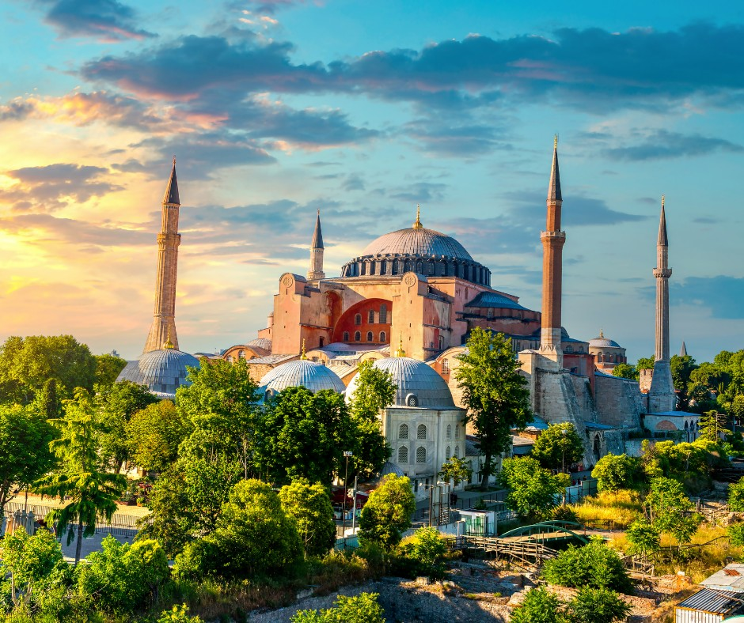
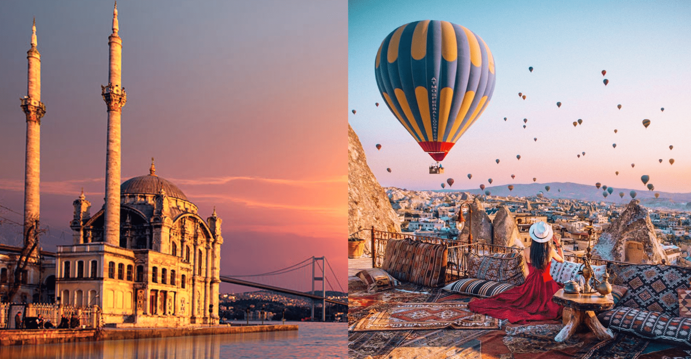
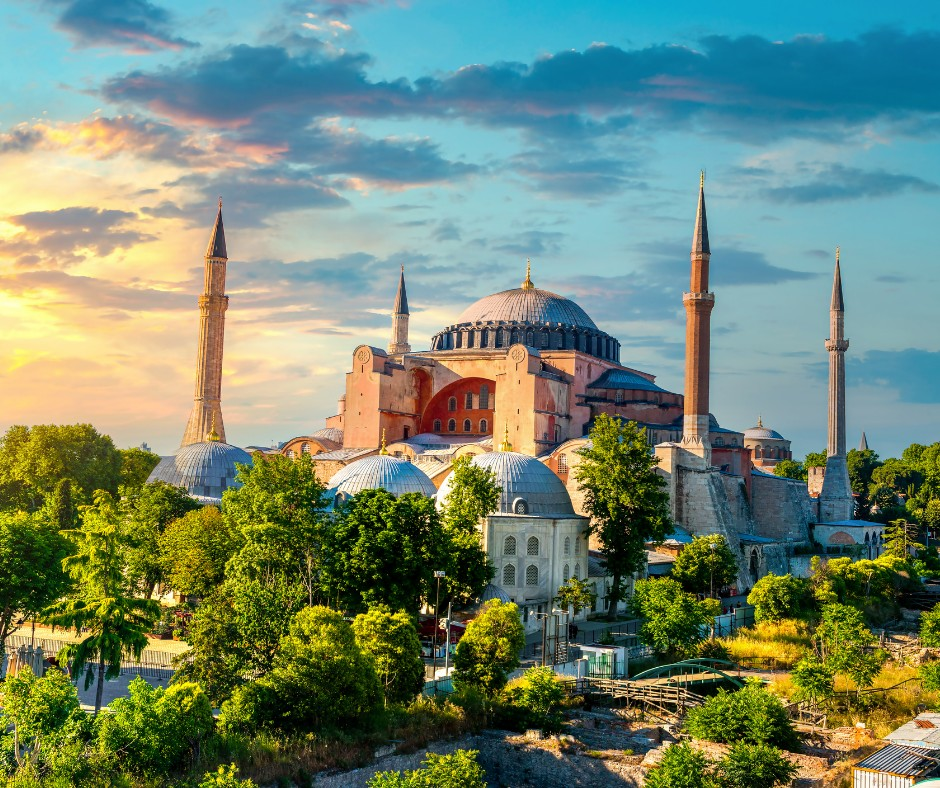
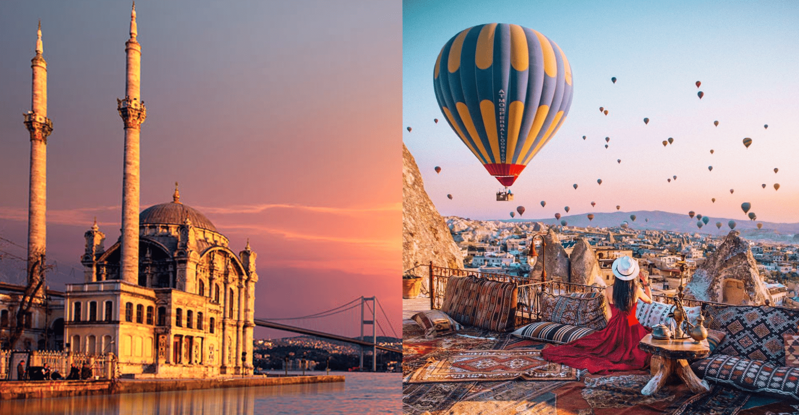

Istanbul, grad koji spaja dva kontinenta, Europe i Azije, jedan je od najfascinantnijih gradova na svijetu. Njegova bogata povijest, raznolika kultura i spektakularna arhitektura čine ga neizbježnom destinacijom za putnike iz svih dijelova svijeta.
Jedan od najupečatljivijih simbola Istanbula je Aja Sofija, monumentalna crkva koja je kasnije pretvorena u džamiju, a danas je muzej. Njezina grandiozna kupola, mozaici i mješavina bizantske i osmanske arhitekture čine je jednim od najimpresivnijih građevina na svijetu.
Drugi poznati spomenik Istanbula je Sultan Ahmedova džamija, poznata kao Plava džamija zbog plavih keramičkih pločica koje krase unutrašnjost. Ova džamija je remek-djelo osmanske arhitekture, koja oduzima dah svojom ljepotom i harmonijom.
 



Istanbul je također poznat po svojim povijesnim četvrtima poput Sultanahmeta i Beyoglua, gdje se možete izgubiti u uskim ulicama i otkriti skrivene dragulje poput tradicionalnih tržnica, antikvarijata i lokalnih restorana.
Grad leži duž Bosfora, tjesnaca koji razdvaja Europu i Aziju, te pruža nevjerojatan pogled na gradiće obale, palače i mostove. Vožnja brodom Bosforom pruža jedinstvenu perspektivu grada i nezaboravan doživljaj.
Istanbul je također domaćin raznovrsnih kulturnih događanja, od koncerata klasične muzike do suvremenih umjetničkih izložbi, te je grad u kojem se stoljeća povijesti stapaju s modernim životom.
| Grad | Populacija (procena) |
|---|---|
| Istanbul | Preko 15 miliona |
| Ankara | Oko 5.6 miliona |
| Izmir | Oko 4.3 miliona |
| Antalya | Oko 2.5 miliona |
| Bursa | Oko 2.1 miliona |
| Adana | Oko 2.2 miliona |
| Gaziantep | Oko 1.8 miliona |
| Konya | Oko 1.3 miliona |
| Mersin | Oko 1.8 miliona |
| Kayseri | Oko 1.4 miliona |
| Eskisehir | Oko 880,000 |
| Diyarbakir | Oko 900,000 |
| Trabzon | Oko 800,000 |
| Samsun | Oko 800,000 |
| Denizli | Oko 1 milion |